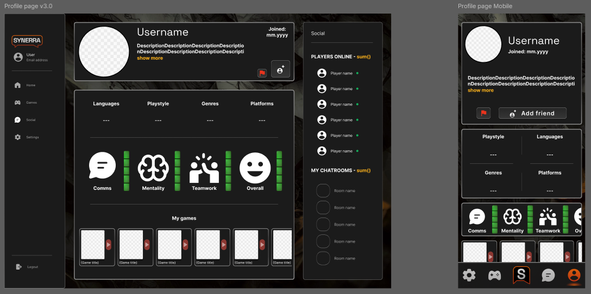
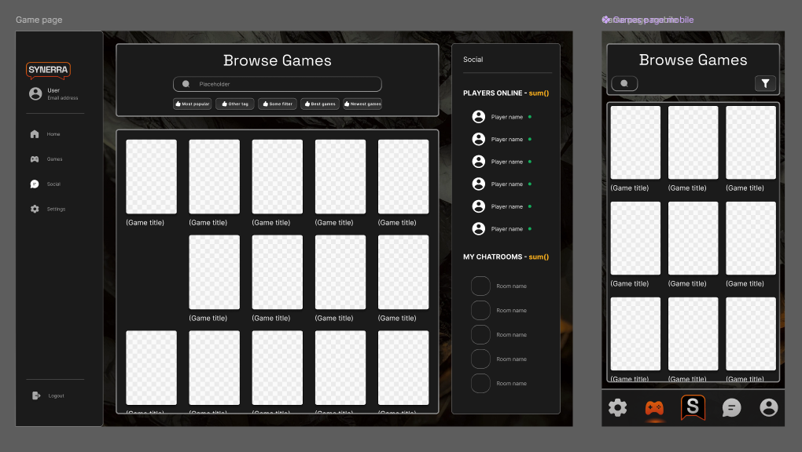
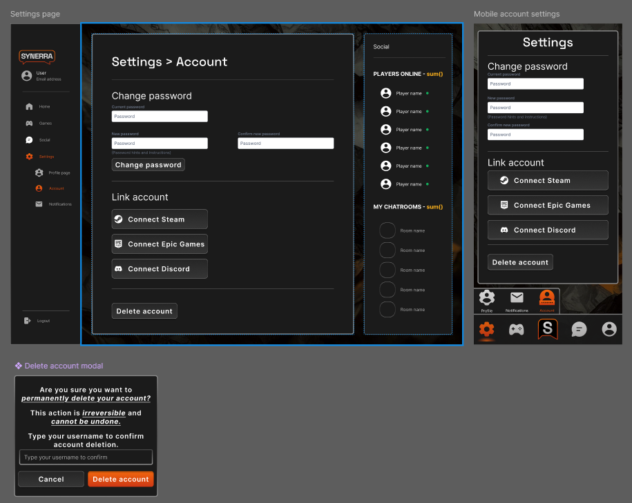
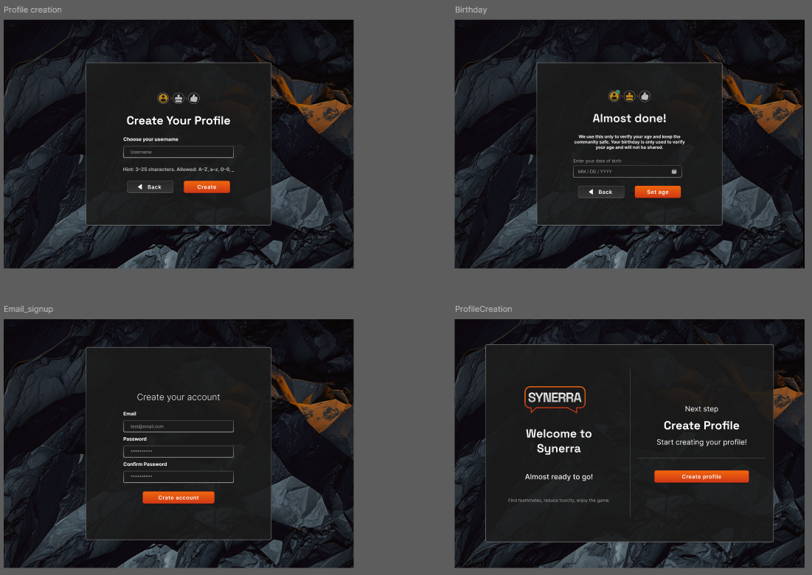

Intro
Olen frontend-kehitykseen ja käyttöliittymäsuunnitteluun suuntautunut opiskelija.
TC-projektissa toimin erityisesti UI/UX-suunnittelun, mobiilinäkymän ja frontendin viimeistelyn parissa.
Tein myös Instagramin
markkinointia varten projektillemme, sekä loin markkinointivideon sinne.
Project overview
Synerra oli ryhmätyönä toteutettu verkkosovellus, jonka tavoitteena oli suunnitella ja toteuttaa moderni,
visuaalisesti erottuva käyttöliittymä.
Projekti toteutettiin opiskelijatiimissä ja kesti useita kuukausia.
Oma roolini projektissa painoittui erityisesti UI/UX-suunnitteluun, mobiilinäkymän toteutukseen ja frontendin
viimeistelyyn sekä liiketoimintaan.
My Role
Vastasin projektin käyttöliittymän suunnittelusta Figmassa. Suunnittelin useita vaihtoehtoisia mobiilinäkymiä ja
toteutin lopullisen rakenteen autolayoutien avulla.
Projektissa opin käytännön kautta mobile-first-ajattelua. Vaikka mobiilinäkymää ei ollut suunniteltu alusta
asti, vastasin sen mukauttamisesta ja rakenteellisista ratkaisuista.




Valitsin nämä näkymät Figma-tiedostosta, sillä niissä on eniten omaa käsialaa, ja näitä loppujen lopuksi
seurattiin lopullisessa tuloksessa melko tarkkaan.
Reflektio
Mitä osasin alussa
Opintojakson alussa koin omaavani riittävät taidot projektin aloittamiseen. Frontend-kehitys oli minulle
tuttua, ja olin varma omasta visuaalisesta silmästäni sekä kyvystäni toteuttaa käyttöliittymiä. Ajattelin
ymmärtäväni melko hyvin, mitä TC tulisi pitämään sisällään, ja uskoin pärjääväni hyvin erityisesti, jos saisin
itselleni mieleisen roolin ryhmässä. Teknisesti HTML ja CSS olivat minulle vahvoja osa-alueita, ja JavaScriptin
kanssa minulla oli jo hyvä perusosaaminen. Sen sijaan Figma oli minulle melko vieras työkalu, Gitin käyttö
rajoittui pintapuoliseen kokemukseen, ja projektityöskentelystä osana suurempaa tiimiä minulla ei ollut
juurikaan aiempaa kokemusta. Lisäksi Angular oli minulle uusi kehys, jota olin käyttänyt vain kerran
aikaisemmin, vaikka sen samankaltaisuudet Svelten kanssa helpottivat alkuun pääsyä.
Mitä osaan nyt
TC-projektin aikana osaamiseni kehittyi merkittävästi usealla osa-alueella. Suurin kehitys tapahtui
projektityöskentelyssä, suunnitteluprosessin ymmärtämisessä sekä Figman käytössä. Opin hyödyntämään Figman Auto
Layout -toiminnallisuuksia ja hahmottamaan käyttöliittymien rakenteita huomattavasti aiempaa systemaattisemmin.
Teknisesti kehityin erityisesti frontendin viimeistelyssä ja responsiivisten näkymien toteutuksessa. Projektin
aikana opin myös käytännön kautta, kuinka tärkeää mobile-first-ajattelu on. Vaikka verkkosivua ei ollut alun
perin suunniteltu mobiilikäyttö edellä, vastasin mobiilinäkymästä ja sen mukauttamisesta olemassa olevaan
rakenteeseen. Tämä kehitti kykyäni ratkaista ongelmia rajoitteiden puitteissa, vaikka lopputulos ei täysin
vastannut omaa ihannetasoani. Gitin ja GitHubin käyttö tuli projektin myötä tutummaksi, ja opin toimimaan osana
tiimiä versionhallinnan kautta. Projektin aikana tein noin 70 kontribuutiota GitHubiin, joista jokainen sisälsi
konkreettista työtä käyttöliittymän, rakenteen tai visuaalisen ilmeen parantamiseksi.
Oppiminen ja oivallukset
Projektin aikana suurin oivallus liittyi siihen, kuinka erilaisia lähestymistapoja projekteilla voi olla, ja
kuinka tärkeää on sopeutua tiimin yhteisiin toimintatapoihin. Opin, että hyvä lopputulos ei synny pelkästään
teknisestä osaamisesta, vaan myös kommunikoinnista, kompromisseista ja muiden työn kehittämisestä. Lisäksi
ymmärsin paremmin oman roolini tiimissä: vahvuuteni ovat visuaalisessa suunnittelussa, käyttöliittymien
rakenteessa ja kokonaisuuden hiomisessa. Opin myös tunnistamaan kehityskohteitani, erityisesti ennakoivassa
suunnittelussa ja mobiilinäkymien huomioimisessa jo projektin alkuvaiheessa.
Tavoitteet ja niiden toteutuminen
Asetin projektin alussa tavoitteekseni saada tyydyttävä määrä työtunteja, kehittää osaamistani monipuolisesti
sekä tuottaa visuaalisesti miellyttävän lopputuloksen. Työtuntien ja aktiivisen osallistumisen osalta tavoitteet
toteutuivat hyvin. Osaamiseni kehittyi erityisesti suunnittelussa, projektityöskentelyssä ja Figman käytössä.
Kaikki tavoitteet eivät kuitenkaan toteutuneet täysin suunnitellulla tavalla. Mobiilinäkymän osalta lopputulos
ei vastannut täysin omaa ihannetasoani, mikä johtui osittain projektin alkuvaiheen suunnitteluratkaisuista.
Tästä huolimatta koen oppineeni tilanteesta paljon ja pystyneeni kehittämään osaamistani myös haastavissa
olosuhteissa.
Tulevaisuuden näkymät
TC-opintojakso selkeytti omaa suuntaani frontend-kehityksen ja UI/UX-painotteisen tekemisen parissa. Haluan
jatkossa kehittyä erityisesti käyttöliittymäsuunnittelun ja teknisen toteutuksen yhdistämisessä. Opintojakso
tuki näitä tavoitteita tarjoamalla käytännön kokemusta tiimiprojektista sekä vastuun kantamisesta omasta
osa-alueesta. Jatkossa koen tarpeelliseksi syventää osaamistani erityisesti suunnitteluprosessin alkuvaiheessa,
versionhallinnan käytössä sekä mobiililähtöisessä suunnittelussa, jotta pystyn tulevaisuudessa tuottamaan
entistä eheämpiä ja harkitumpia kokonaisuuksia.